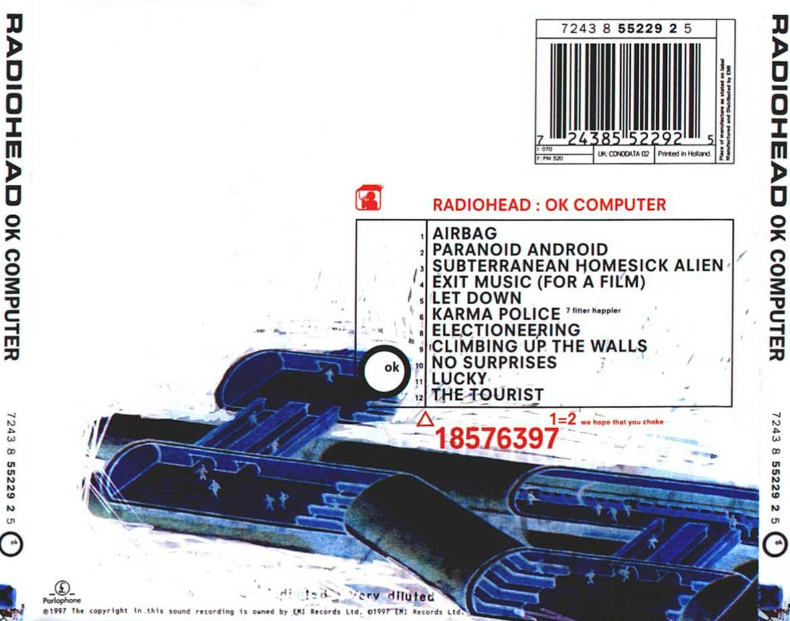

Informations

Radiohead-OK Computer(1997)
OK Computer is the third studio album by English rock band Radiohead, released on 21 May 1997 on EMI subsidiaries Parlophone and Capitol Records. Radiohead self-produced the album with Nigel Godrich, an arrangement they have used for their subsequent albums. Other than the song "Lucky", recorded in 1995, Radiohead recorded OK Computer in Oxfordshire and Bath in 1996 and early 1997, mostly in the historic mansion St Catherine's Court. The band distanced themselves from the guitar-centred, lyrically introspective style of their previous album, The Bends. OK Computer's abstract lyrics, densely layered sound and eclectic influences laid the groundwork for Radiohead's later, more experimental work. The album depicts a world fraught with rampant consumerism, social alienation, emotional isolation and political malaise; in this capacity, OK Computer has been said to have prescient insight into the mood of 21st-century life. The band used unconventional production techniques, including natural reverberation through recording on a staircase, and no audio separation. Strings were recorded at Abbey Road Studios in London. Guitarist Ed O'Brien estimated that 80 per cent of the album was recorded live.
Despite lowered sales estimates by EMI, who deemed the record uncommercial and difficult to market, OK Computer reached number one on the UK Albums Chart and debuted at number 21 on the Billboard 200, Radiohead's highest album entry on the US charts at the time, and was soon certified 5× platinum in the UK and double platinum in the US. The songs "Paranoid Android", "Karma Police", "Lucky" and "No Surprises" were released as singles. The album expanded Radiohead's international popularity and has sold at least 7.8 million units worldwide. A remastered version with additional tracks, OKNOTOK 1997 2017, was released in 2017, marking the album's twentieth anniversary. In 2019, in response to an internet leak, Radiohead released MiniDiscs [Hacked], comprising over 16 hours of demos, rehearsals, live performances and other material. OK Computer received critical acclaim and has been cited by listeners, critics and musicians as one of the greatest albums of all time. It was nominated for the Album of the Year and won Best Alternative Music Album at the 1998 Grammy Awards. It was also nominated for Best British Album at the 1998 Brit Awards. The album initiated a stylistic shift in British rock away from Britpop toward melancholic, atmospheric alternative rock that became more prevalent in the next decade. In 2014, it was included by the Library of Congress in the National Recording Registry as "culturally, historically, or aesthetically significant".
